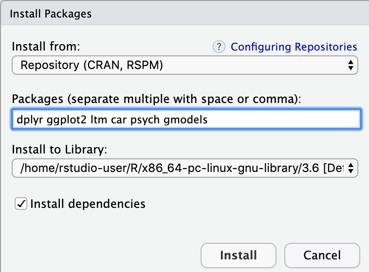

Setup
First, download your data from Qualtrics
Open your survey in Qualtrics and hit the "Data & Analysis" tab in the top menu bar:

Find the "Export and Import" dropdown menu above the data and select "Export Data..."


Note the default is to download the data as a CSV file with the display text in the survey entered as the data output ("Use choice text"). You also have the option to download the data as "numerical values", or dummy coded. For our purposes, download both versions ov the data so we can look at them. You'll have to go through the process of downloading twice.
Make sure to save these files in a folder (directory) where you want to keep them, and where you plan to store the script you will use to analyze this data.

In examples, this tutorial will use data from an informal Qualtrics experiment on altruistic behavior and the valuation of reputation. You can download both versions of the data here:
Numerical Data Choice Text DataMake sure you have R installed on your computer
If you don't, go to this page and click the link consistent with your computer's OS (Windows, Mac, or Linux)
If you're on a Mac, hit the first .pkg link under "Latest release" to download on the next page and go through installation.
If you're using a PC, click the "install R for the first time" link on the next page to downloadand go through installation.
Make sure you have RStudio on your computer too
If you don't, go to this page and you will find a list of free versions of rStudio Desktop. Download the version consistent with your OS (Windows, Mac, Linux, etc.)
Install some helpful packages in your RStudio Environemnt
Some functions (for example mean(data)) come built in to base R, but packages give us access to helpful functions that make life easier. dplyr gives us shortcuts to deal with dataframes, ggplot2 gives us the ability to generate more intuitive and interpretable plots of our data, and Hmisc and ltm give us a few statistical tests that don't happen to be built in to base R.
With RStudio, there are two ways to install packages:
Method 1: Copy the following code into the console and run it:
Method 2: Use the bottom right window GUI interface
Click on the "Packages" tab, then the "Install" button underneath it. Type the four packages names into the input bar with spaces in between:
dplyr ggplot2 ltm car fastDummies psych
Then make sure the "Install dependencies" box is checked, and press "Install"
A bunch of stuff will print in the console VERY fast. If you get warnings, that's ok. But if you get errors, read them and see if you can figure them out. Sometimes, depending on your computer, you may need to install other packages to support these ones.